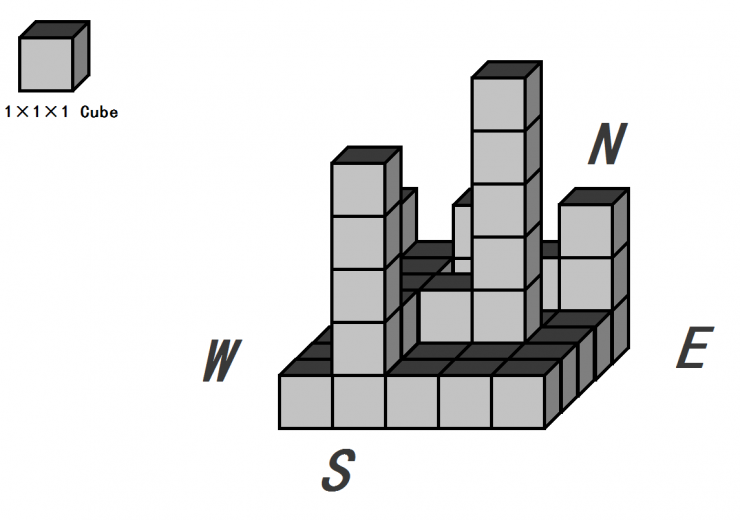
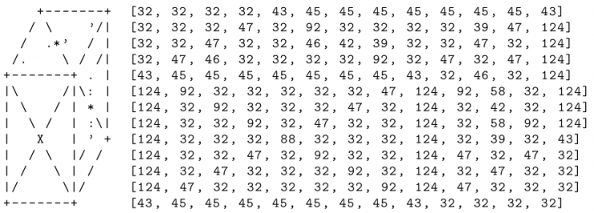
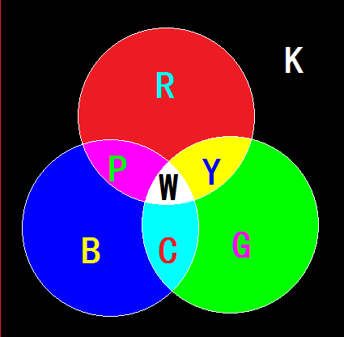

小渊是个聪明的孩子，他经常会给周围的小朋友们讲些自己认为有趣的内容。最近，他准备给小朋友们讲解彩色水
平光源照射下的立体图，并请你帮他在平面上画出来。小渊有一块面积为m*n的矩形区域，上面有m*n个边长为1的
格子，每个格子上堆了一些同样大小的积木（积木的长宽高都是1）。为了方便阐述，我们假设这块区域是坐北朝
南的，下面我们给出一个例子。

小渊想请你打印出这些格子的立体图。我们定义每个积木为如下格式，并且不会做任何翻转旋转，只会严格以这一
种形式摆放（左侧是应该打印出来的图样，右侧为对应每一个位置符号的十进制ASCII，其中ASCII为32的符号为空

在良好的光学环境下，小渊将T束平行光同时照射在这些积木上。这些平行光首先满足一定是红绿蓝三基色之一，
其次入射角度满足：与x轴y轴的夹角度数均为45的倍数；且与z轴正方向的夹角或为45度，或为0度，或为315度。
具体来说，我们最多会考虑9个方向的不同平行光，它们的入射方向可以被描述为：
西北方45度仰角 正北方45度仰角 东北方45度仰角
正西方45度仰角 垂直从上入射光 正东方45度仰角
西南方45度仰角 正南方45度仰角 东南方45度仰角
对于每一个单位积木来说，可以打印出来的三个表面被分为12个小三角形，如下图所示（下图中用符号0,1,2,。。

红绿蓝三基色分别用字母RGB来表示。
而二次叠加后的三种颜色青黄紫，分别用YCP来表示。
对于三次叠加后的颜色，也就是白色，用W来表示。